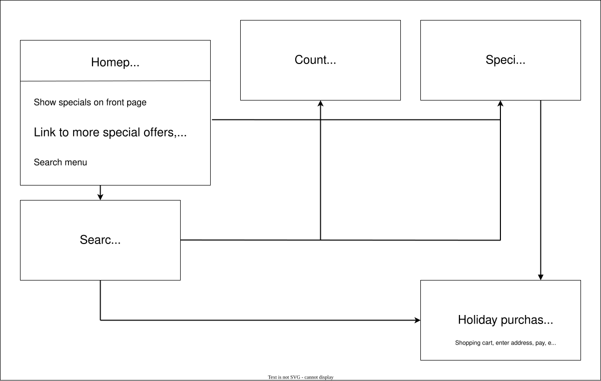
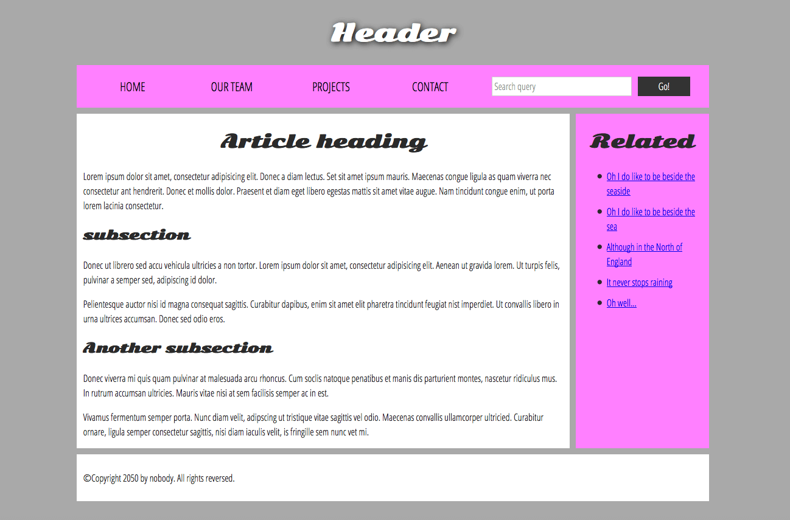
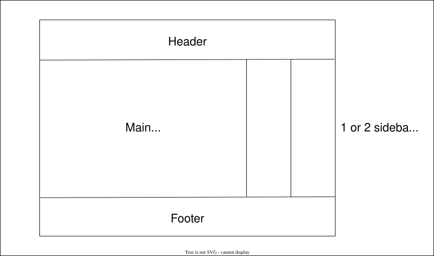
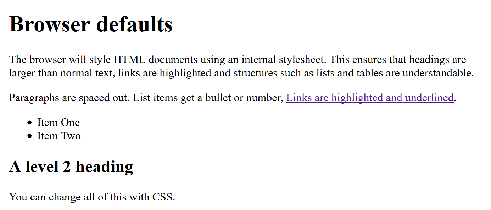

Anatomy of a Website
Module 1 - Web Design & Development
Lecture 1.3
ASM 532, Introduction to Ag Informatics
Ankita Raturi, ankita@purdue.edu
Lecture Outline
- Anatomy of a Website
- HTML Basics
- CSS Basics
- The Box Model
- Complex Layouts
- Quiz 1: Decomposing a Website
Software Anatomy
![A hand-drawn sketch of a web application, annotated in colour. A tilted browser window is outlined in red and labelled "User Interface"; inside it, a map area is outlined in green and labelled "Maps API", a table of data below it is outlined in purple and labelled "Data layer", and a login icon in the corner is labelled "User authentication". A note at the left reads "served on a device". A cloud above is labelled "hosted on the cloud", with "cloud" crossed out and replaced by "internet-enabled computer". At the right, a page of angle-bracket code is labelled "built using source code", above a smiling laptop and the note "written by humans!".](img/m1-anatomy-software.jpg)
Anatomy of a Website
- The site map: how pages connect to each other
- The web page: how one page is arranged
- The element: how content is placed
- The attribute: customizing content
Let's zoom in, then build back out again.
Zoom out: the site map
Consider: what pages exist, and how do you navigate them?

Diagram from MDN Web Docs, "Structuring documents" (CC BY-SA 2.5)
Zoom in: the page
Consider: what elements exist, and how do you lay them out?

Diagram from MDN Web Docs, "Structuring documents" (CC BY-SA 2.5)
Atomize the page

Diagram from MDN Web Docs, "Structuring documents" (CC BY-SA 2.5)
Translate the page to code
...Enhance!
Diagram from MDN Web Docs, "Structuring documents" (CC BY-SA 2.5)
Zoom in: HTML elements

- The tags = type of element
- The content = what's rendered on the web page
Elements nest!
Diagram from MDN Web Docs, "Basic HTML syntax" (CC BY-SA 2.5)
Customize elements via attributes

classis a reusable attribute. Treat it like a custom tag.idis a unique attribute. Use it sparingly.- You can call these in CSS to do custom styling.
.editor-note{
color: red;
}
Diagram from MDN Web Docs, "Basic HTML syntax" (CC BY-SA 2.5)
Browser defaults

Snippets + diagram from MDN Web Docs, "What is CSS?" (CC BY-SA 2.5)
HTML only
CSS is great
You can style text.
And create layouts and special effects.
Snippets + diagram from MDN Web Docs, "What is CSS?" (CC BY-SA 2.5)
HTML + CSS
/* css comment */
h1{
color: red;
}
p{
background: blue;
}
.fancy{
animation: blinker 1s linear infinite;
}
@keyframes blinker {
50% {
opacity: 0;
}
}
CSS is great
You can style text.
And create layouts and special effects.
Snippets + diagram from MDN Web Docs, "What is CSS?" (CC BY-SA 2.5)
Anatomy of a Website
site → page → element → attribute
HTML + CSS
structure + style
Demo: build a website by zooming in and out
Quiz: translate drawing to code in 20 minutes
Demo
Build a digital recipe book.
Quiz
20 minutes, paper only. Use your cheatsheet.
Work in pairs. Ask us questions!
Goal: to gut-check how you're coping with the course.
License
-

Introduction to Agricultural Informatics Course by Ankita Raturi, Purdue University is licensed under a Creative Commons Attribution-NonCommercial-ShareAlike 4.0 International License.
- You are free to:
- Share — copy and redistribute the material in any medium or format
- Adapt — remix, transform, and build upon the material
- Under the following terms:
- Attribution — You must give appropriate credit, provide a link to the license, and indicate if changes were made. You may do so in any reasonable manner, but not in any way that suggests the licensor endorses you or your use.
- NonCommercial — You may not use the material for commercial purposes.
- ShareAlike — If you remix, transform, or build upon the material, you must distribute your contributions under the same license as the original.
- No additional restrictions — You may not apply legal terms or technological measures that legally restrict others from doing anything the license permits.